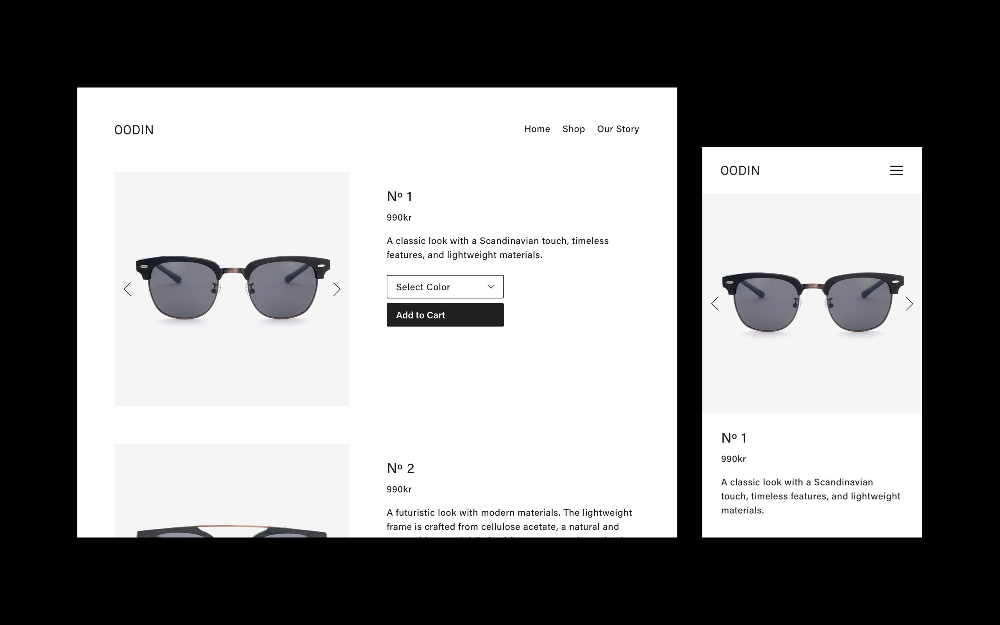

Branding and online store created for OODIN, an eyewear brand with origins in Gothenburg, Sweden.
The company name derives from 'Odin', the god who according to Norse mythology was accompanied by a pair of ravens—Huginn and Muninn. We used the ravens as inspiration for the logotype, creating a symbol featuring two stylized birds.


